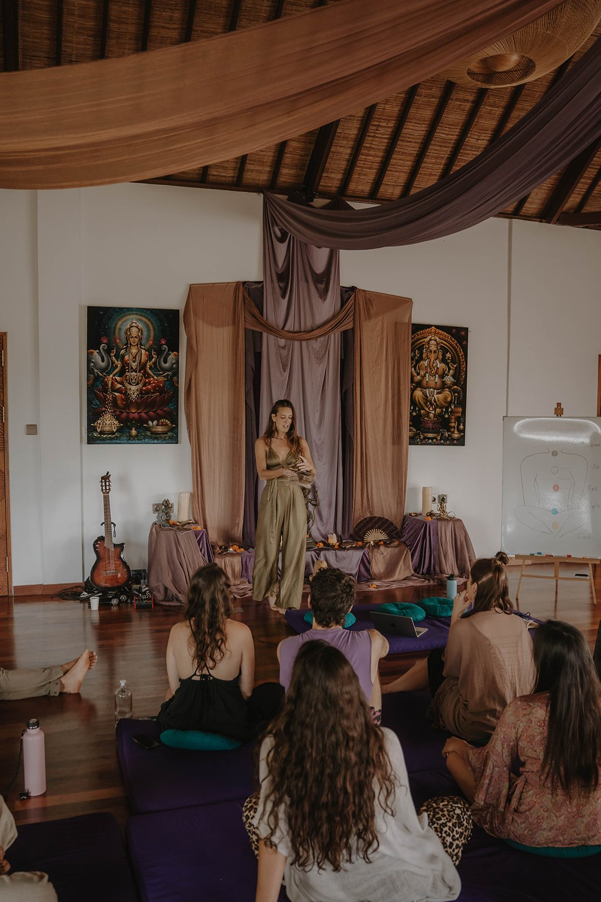

Grounding the cleanse
Listening to what shifted. Walking the medicine home. Support for the phase where the real work begins.

The Real Work Begins
Kambô is not finished when the purge ends. In many ways, that is where the real work begins.
After the physical cleanse, the system continues to reorganize — emotionally, energetically, neurologically, relationally. What is released wants to be met. What is revealed wants to be integrated. What is cleared wants to land in your life.
Kambô Integration Sessions exist for this phase. Not to add more, not to analyze, but to listen carefully — and support the medicine in completing its work through the body, the nervous system, and lived reality.
When to Listen
People often book integration when:
Kambô works across many layers at once. Integration helps those layers speak to each other.


The Private Container
A Kambô Integration Session is a private, embodied ritual space to meet what the medicine activated — gently, consciously, and without urgency.
We listen to:
This is not medical advice. It is somatic, tantric, and shamanic integration — grounded in presence and respect for the intelligence of the medicine.
The Process
Each session is responsive and unique, guided by what is alive in you.
Grounding and regulation to help your system settle after the intensity of the cleanse.
Listening to the language of sensation and emotion as it moves through your body.
Practices to anchor clarity, presence, and your authentic truth in the here and now.
Holding space for what wants to settle, complete, or reveal itself through the medicine's wisdom.
Honoring the journey and creating a conscious transition back into your daily rhythm.
Translating insights into habits, boundaries, relationships, and self-trust.
Nothing is forced. Nothing is rushed. The body leads — we follow your truth.
From Event to Relationship
Kambô is a warrior medicine. It clears. It strips. It reveals.
Integration ensures that:
This is how Kambô becomes a relationship, not an event.


The Call
Many people book integration 3–10 days after ceremony, once the dust has settled and truth begins to speak.
Your Guide
These sessions are held by Sandi Djoulfian — Kambô practitioner, Tantrika, and shamanic facilitator.
Sandi’s integration work bridges:
Her approach is precise, grounded, and deeply respectful — of the medicine, and of the human experience moving through it.

The Exchange
Deepening the Path
Some people come for one integration session. Others feel called into deeper support. This work may naturally open into:
A comprehensive package for deep physical and somatic transformation.
Targeted support for specific life transitions or emotional blockages.
Longer archetypal or mentorship journeys for sustained growth.
Nothing is pushed. We listen together.
Kambô integration session · Kambo aftercare · Post-Kambô support · Somatic integration after ceremony · Kambô integration Amsterdam